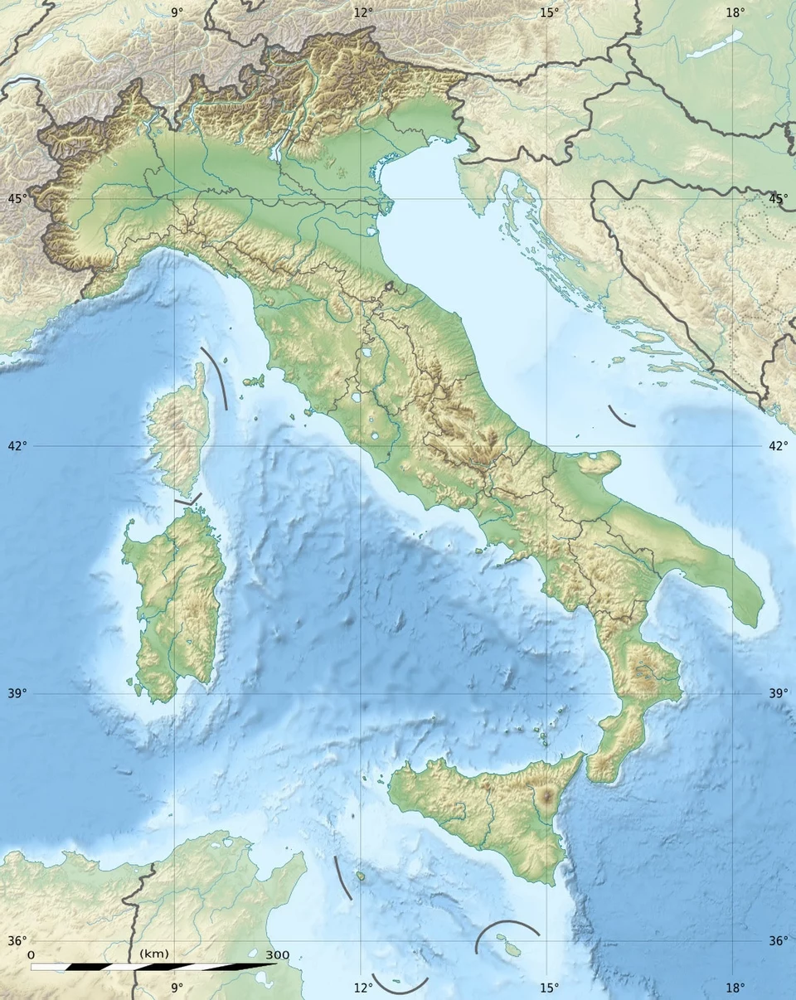

Summary
Italy is a country where history, art, and natural beauty come together in a way few places can match. From the ancient ruins of Rome to the romantic canals of Venice, the Renaissance treasures of Florence, and the sun-drenched coastlines of the Amalfi and Cinque Terre, Italy offers unforgettable culture and scenery. The capital is Rome, and the primary language is Italian, though English is widely spoken in major tourist destinations. The best time to visit is spring and autumn for comfortable weather and lighter crowds.
Getting around
Transport
Italy’s rail network is extensive and convenient. High-speed trains like Frecciarossa and Italo connect major cities quickly, while regional trains reach smaller towns and countryside areas. Urban travel is easy with metro systems in Rome, Milan, and Naples, along with buses and trams. Renting a car is helpful for rural regions such as Tuscany, Puglia, or the Dolomites, where public transport is limited. Ferries connect coastal cities and islands like Sardinia, Sicily, and Capri.
Safety
Italy is generally safe, with most visits trouble-free. The main issue travelers encounter is petty theft in busy cities—especially around major attractions, train stations, and public transit. Keep valuables secure and be mindful in crowds. Central areas are typically safe at night, though some neighborhoods around large train stations can feel rough after dark. Follow local guidance during major holidays and events, which can draw large crowds.